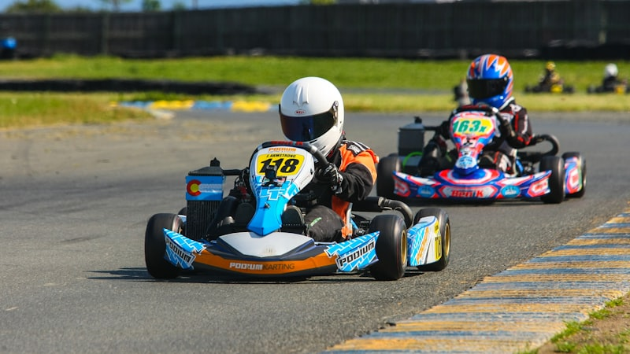

Go-Kart Time Trials for Town Cats of Ocean City

When we started brainstorming fundraiser ideas for Town Cats of Ocean City, the usual suspects came up: bake sales, car washes, maybe a silent auction. All perfectly fine. But this is Spinach the Cow — we don't do perfectly fine. We do fun. So naturally, someone said, "What about go-karts?" And just like that, the Spinach Grand Prix was born.
Race Day
On a sunny Saturday morning in Ocean City, the herd showed up in full force. We're talking matching Spinach racing jerseys, checkered flag bandanas, and more competitive energy than anyone expected from a charity event. The format was simple: time trials. Every racer got two laps to post their fastest time, with all entry fees and pledges going directly to Town Cats.
The track was lined with spectators, a DJ kept the energy high between heats, and we set up a merch tent where folks could grab limited-edition "Spinach Grand Prix" tees — with 100% of proceeds going to the cause.
The Competition
Let's just say the team takes go-karting more seriously than expected. Clark posted an early lead that held up for most of the afternoon, but it was Bubba who came out of nowhere in the final heat to clock the fastest time of the day. There may have been some good-natured trash talk. There may have been a victory lap. We're not confirming anything.
But the real winners? The cats. Every single dollar raised — from entry fees, merch sales, and generous donations from spectators — went straight to Town Cats of Ocean City to support their trap-neuter-return program, foster network, and adoption efforts.
Why Town Cats
Town Cats of Ocean City is one of those organizations that does incredible work without a lot of fanfare. They're out there every day caring for the community cat population — feeding, trapping, getting cats spayed and neutered, fostering kittens, and finding forever homes. Ocean City is our home, and supporting the people (and cats) who make it special is exactly what Spinach the Cow is about.
What's Next
The Spinach Grand Prix was such a hit that we're already planning the next one. Bigger track, more racers, and hopefully even more support for Town Cats. If you missed this round, keep an eye on our socials for the next event. And if you want to support Town Cats directly, reach out to them — they're always looking for volunteers, foster homes, and donations.
Because at the end of the day, the best laps are the ones that make a difference.